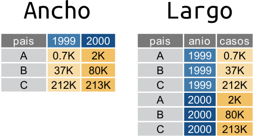

Capítulo 8 Manipulación de datos ordenados usando {dplyr} y {tidyr} II
======= <<<<<<< Updated upstream <<<<<<< Updated upstream <<<<<<< HEADCapítulo 8 Manipulación de datos ordenados usando {dplyr} y {tidyr} II
=======7.4 Manipulación de datos ordenados usando {dplyr} y {tidyr} II
>>>>>>> dplyr-1 =======Capítulo 7 Manipulación de datos ordenados usando {dplyr} y {tidyr} II
>>>>>>> Stashed changes =======Capítulo 7 Manipulación de datos ordenados usando {dplyr} y {tidyr} II
>>>>>>> Stashed changes >>>>>>> ggplot2En la última sección de lectura de datos viste el concepto de datos “anchos” y “largos”.
Los datos en formato “largo” o “tidy”, son aquellos en los cuales:
- cada fila es una observación
- cada columna es una variable
En el formato “ancho” es un poco más complejo de definirlo pero la idea general es que:
- cada fila es un “item”
- cada columna es una variable

Una tabla en formato largo va a tener una cierta cantidad de columnas que cumplen el rol de identificadores y cuya combinación identifican una única observación y una única columna con el valor de la observación.
En el ejemplo de arriba, pais y anio son las columnas identificadoras y casos es la columna que contiene el valor de las observaciones.
En una tabla ancha, cada observación única se identifica a partir de la intersección de filas y columnas. En el ejemplo, los países están en las filas y los años en las columnas.
En general, el formato ancho es más compacto y legible por humanos mientras que el largo es más fácil de manejar con la computadora. Si te fijás en las tablas de arriba, es más fácil comparar los valores entre países y entre años en la tabla ancha. Pero el nombre de las columnas (“1999”, “2000”) en realidad ¡son datos! Además este formato se empieza a complicar en cuanto hay más de dos identificadores.
Un mismo set de datos puede ser representado de forma completamente “larga”, completamente “ancha” o –lo que es más común– en un formato intermedio pero no existe una forma “correcta” de organizar los datos; cada una tiene sus ventajas y desventajas. Por esto es que es muy normal que durante un análisis los datos vayan y vuelvan entre distintos formatos dependiendo de los métodos estadísticos que se le aplican. Entonces, aprender a transformar datos anchos en largos y viceversa es un habilidad muy útil.
Desafío
En las tablas de ejemplo cada país tiene el un valor observado de “casos” para cada año. ¿Cómo agregarías una nueva variable con información sobre “precios”? Dibujá un esquema en papel y lápiz en formato ancho y uno en formato largo. ¿En qué formato es más “natural” esa extensión?
En esta sección vas a usar el paquete {tidyr} para manipular datos. Si no lo tenés instalado, instalalo con el comando:
<<<<<<< Updated upstream <<<<<<< HEAD ======= <<<<<<< Updated upstream <<<<<<< HEAD >>>>>>> ggplot2(como siempre, recordá que esto hay que hacerlo una única vez)
Y luego cargá {tidyr} y {dplyr} (que usaste en una sección anterior) con:
8.1 De ancho a largo con pivot_longer()
En secciones anteriores usaste una versión de los datos de gapminder. Ahora vas a leer los datos en su formato original:
=======install.packages("tidyr")(como siempre, recordá que esto hay que hacerlo una única vez)
Y luego cargá {tidyr} y {dplyr} (que usaste en una sección anterior) con:
<<<<<<< HEADlibrary(tidyr)
library(dplyr)8.1 De ancho a largo con pivot_longer()
En secciones anteriores usaste una versión de los datos de gapminder. Ahora vas a leer los datos en su formato original:
paises_ancho <- readr::read_csv("datos/paises_ancho.csv")library(tidyr)
library(dplyr)install.packages("tidyr")(como siempre, recordá que esto hay que hacerlo una única vez)
Y luego cargá {tidyr} y {dplyr} (que usaste en una sección anterior) con:
library(tidyr)
library(dplyr)7.1 De ancho a largo con pivot_longer()
En secciones anteriores usaste una versión de los datos de gapminder. Ahora vas a leer los datos en su formato original:
paises_ancho <- readr::read_csv("datos/paises_ancho.csv")## Rows: 142 Columns: 38## ── Column specification ────────────────────────────────────────────────────────
## Delimiter: ","
## chr (2): continente, pais
## dbl (36): pib_per_capita_1952, pib_per_capita_1957, pib_per_capita_1962, pib...##
## ℹ Use `spec()` to retrieve the full column specification for this data.
## ℹ Specify the column types or set `show_col_types = FALSE` to quiet this message.paises_anchopaises_ancho## # A tibble: 142 × 38
## continente pais pib_per_capita_… pib_per_capita_… pib_per_capita_…
## <chr> <chr> <dbl> <dbl> <dbl>
## 1 Africa Algeria 2449. 3014. 2551.
## 2 Africa Angola 3521. 3828. 4269.
## 3 Africa Benin 1063. 960. 949.
## 4 Africa Botswana 851. 918. 984.
## 5 Africa Burkina Faso 543. 617. 723.
## 6 Africa Burundi 339. 380. 355.
## 7 Africa Cameroon 1173. 1313. 1400.
## 8 Africa Central African Republic 1071. 1191. 1193.
## 9 Africa Chad 1179. 1308. 1390.
## 10 Africa Comoros 1103. 1211. 1407.
## # … with 132 more rows, and 33 more variables: pib_per_capita_1967 <dbl>,
## # pib_per_capita_1972 <dbl>, pib_per_capita_1977 <dbl>,
## # pib_per_capita_1982 <dbl>, pib_per_capita_1987 <dbl>,
## # pib_per_capita_1992 <dbl>, pib_per_capita_1997 <dbl>,
## # pib_per_capita_2002 <dbl>, pib_per_capita_2007 <dbl>,
## # esperanza_de_vida_1952 <dbl>, esperanza_de_vida_1957 <dbl>,
## # esperanza_de_vida_1962 <dbl>, esperanza_de_vida_1967 <dbl>, …¿Notaste que en el código anterior no usaste library(readr) para cargar el paquete y luego leer?
Con la notación paquete::funcion() podés acceder a las funciones de un paquete sin tener que cargarlo.
Es una buena forma de no tener que cargar un montón de paquetes innecesarios si vas a correr una única función de un paquete pocas veces.
Esta tabla, increíblemente ancha, es muy difícil de manejar. Por ejemplo, es imposible hacer una serie de tiempo de una variable, o calcular el promedio por variable y país; ni hablar de calcular una regresión lineal.
Para convertirlo en una tabla más larga, se usa pivot_longer() (“longer” es “más largo” en inglés):
paises_largo <- pivot_longer(paises_ancho,
cols = c(starts_with('pob'),
starts_with('esperanza'),
starts_with('pib_per')),
names_to = "variable_anio",
values_to = "valor"
)
paises_largopaises_largo <- pivot_longer(paises_ancho,
cols = c(starts_with('pob'),
starts_with('esperanza'),
starts_with('pib_per')),
names_to = "variable_anio",
values_to = "valor"
)
paises_largopaises_largo <- pivot_longer(paises_ancho,
cols = c(starts_with('pob'),
starts_with('esperanza'),
starts_with('pib_per')),
names_to = "variable_anio",
values_to = "valor"
)
paises_largo## # A tibble: 5,112 × 4
## continente pais variable_anio valor
## <chr> <chr> <chr> <dbl>
## 1 Africa Algeria poblacion_1952 9279525
## 2 Africa Algeria poblacion_1957 10270856
## 3 Africa Algeria poblacion_1962 11000948
## 4 Africa Algeria poblacion_1967 12760499
## 5 Africa Algeria poblacion_1972 14760787
## 6 Africa Algeria poblacion_1977 17152804
## 7 Africa Algeria poblacion_1982 20033753
## 8 Africa Algeria poblacion_1987 23254956
## 9 Africa Algeria poblacion_1992 26298373
## 10 Africa Algeria poblacion_1997 29072015
## # … with 5,102 more rowsEl primer argumento depivot_longer() es la tabla que va a modificar: paises_ancho.
El segundo argumento se llama cols y es un vector con las columnas que tienen los valores a “alargar”.
Podría ser un vector escrito a mano (algo como c("pib_per_capita_1952", "pib_per_capita_1957"...)) pero con más de 30 columnas, escribir todo eso sería tedioso y probablemente estaría lleno de errores.
Por eso {tidyr} provee funciones de ayuda para seleccionar columnas en base a patrones.
El código de arriba usa starts_with() que, como su nombre en inglés lo indica, selecciona las columnas que empiezan con una determinada cadena de caracteres.
El vector c(starts_with('pob'), starts_with('esperanza'), starts_with('pib_per')) le dice a pivot_longer() que seleccione las columnas que empieza con “pob”, las que empiezan con “esperanza” y las que empiezan con “pib_per”.
Estas funciones accesorias para seleccionar muchas funciones se llaman “tidyselect”.
Si querés leer más detalles de las distintas formas que podés seleccionar variables leé la documentación usando ?tidyselect::language.
El tercer y cuarto argumento son los nombres de las columnas de “nombre” y de “valor” que va a tener la nueva tabla. Como la nueva columna de identificación tiene los datos de la variable y el año a medir, “variable_anio” es un buen nombre. Y la columna de valor va a tener… bueno, el valor.
Tomate un momento para visualizar lo que acaba de pasar. La tabla ancha tenía un montón de columnas con distintos datos. Ahora estos datos están uno arriba de otro en la columna “valor”, pero para identificar el nombre de la columna de la cual vinieron, se agrega la columna “variable_anio”.

Proceso de largo a ancho
La columna variable_anio todavía no es muy útil porque contiene 2 datos, la variable (población, expectativa de vida o PBI per cápita) y el año.
Sería mejor separar esta información en dos columnas llamadas “variable” y “anio”.
Para eso está la función separate().
separate(paises_largo,
col = variable_anio,
into = c("variable", "anio"),
sep = -4)separate(paises_largo,
col = variable_anio,
into = c("variable", "anio"),
sep = -4)## # A tibble: 5,112 × 5
## continente pais variable anio valor
## <chr> <chr> <chr> <chr> <dbl>
## 1 Africa Algeria poblacion_ 1952 9279525
## 2 Africa Algeria poblacion_ 1957 10270856
## 3 Africa Algeria poblacion_ 1962 11000948
## 4 Africa Algeria poblacion_ 1967 12760499
## 5 Africa Algeria poblacion_ 1972 14760787
## 6 Africa Algeria poblacion_ 1977 17152804
## 7 Africa Algeria poblacion_ 1982 20033753
## 8 Africa Algeria poblacion_ 1987 23254956
## 9 Africa Algeria poblacion_ 1992 26298373
## 10 Africa Algeria poblacion_ 1997 29072015
## # … with 5,102 more rowsEl primer argumento, como siempre, es la tabla a procesar.
El segundo, col, es la columna a separar en dos (o más) columnas nuevas.
El tercero, into es el nombre de las nuevas columnas que separate() va a crear.
El último argumento es sep que define cómo realizar la separación.
Por defecto, sep es una expresión regular que captura cualquier caracter no alfanumérico.
En el caso de variable_anio no sirve, porque para valores como "esperanza_de_vida_1952", separaría en "esperanza", "de", "vida" y "1952".
Como el año tiene siempre 4 caracteres, una solución simple es usar sep = -4, que significa que la separación es 4 caracteres contando desde el final.
Habrás notado un problema.
El texto en la columnas variable todavía tiene un “_” al final.
Podrías usar mutate() y un poco de funciones de manipulación de caracteres para quitarlo, pero hay una forma un poco más simple y es separando la columna variable_anio en tres, incluyendo una columna con el guión:
paises_largo <- separate(paises_largo,
col = variable_anio,
into = c("variable", "guion", "anio"),
sep = c(-5, -4))
paises_largopaises_largo <- separate(paises_largo,
col = variable_anio,
into = c("variable", "guion", "anio"),
sep = c(-5, -4))
paises_largopaises_largo <- separate(paises_largo,
col = variable_anio,
into = c("variable", "guion", "anio"),
sep = c(-5, -4))
paises_largo## # A tibble: 5,112 × 6
## continente pais variable guion anio valor
## <chr> <chr> <chr> <chr> <chr> <dbl>
## 1 Africa Algeria poblacion _ 1952 9279525
## 2 Africa Algeria poblacion _ 1957 10270856
## 3 Africa Algeria poblacion _ 1962 11000948
## 4 Africa Algeria poblacion _ 1967 12760499
## 5 Africa Algeria poblacion _ 1972 14760787
## 6 Africa Algeria poblacion _ 1977 17152804
## 7 Africa Algeria poblacion _ 1982 20033753
## 8 Africa Algeria poblacion _ 1987 23254956
## 9 Africa Algeria poblacion _ 1992 26298373
## 10 Africa Algeria poblacion _ 1997 29072015
## # … with 5,102 more rowsY ya casi.
Hay que eliminar la columna guion, que no sirve para nada.
Pero fijate que debajo de la columna anio dice <chr>; eso significa que el tipo de la columna es caracter, pero los años son números.
Usando mutate() podés eliminar la columna guion asignándole el valor NULL (nulo) y coercer (recordá esta sección) la columna anio a entero usando as.integer():
paises_largo <- mutate(paises_largo,
guion = NULL,
anio = as.integer(anio))
paises_largopaises_largo <- mutate(paises_largo,
guion = NULL,
anio = as.integer(anio))
paises_largo## # A tibble: 5,112 × 5
## continente pais variable anio valor
## <chr> <chr> <chr> <int> <dbl>
## 1 Africa Algeria poblacion 1952 9279525
## 2 Africa Algeria poblacion 1957 10270856
## 3 Africa Algeria poblacion 1962 11000948
## 4 Africa Algeria poblacion 1967 12760499
## 5 Africa Algeria poblacion 1972 14760787
## 6 Africa Algeria poblacion 1977 17152804
## 7 Africa Algeria poblacion 1982 20033753
## 8 Africa Algeria poblacion 1987 23254956
## 9 Africa Algeria poblacion 1992 26298373
## 10 Africa Algeria poblacion 1997 29072015
## # … with 5,102 more rowsDesafío
Juntá todos los pasos anteriores en una sola cadena de operaciones usando %>%.
8.2 De largo a ancho con pivot_wider()
=======
7.2 De largo a ancho con pivot_wider()
>>>>>>> ggplot2
Ahora la variable paises_largo está en el formato más largo posible.
Tiene 5 columnas, de las cuales sólo una es la columnas con valores.
Pero con los datos así no podrías hacer un gráfico de puntos que muestre la relación entre el PBI per cápita y la expectativa de vida como en la sección de gráficos.
Fijate que los valores de la columna valor no tienen todos las mismas unidades, por lo que operar con ese vector podría dar resultados sin sentido.
Muchas veces es conveniente y natural tener los datos en un formato intermedio en donde hay múltiples columnas con los valores de distintas variables observadas.
Pasa “ensanchar” una tabla está la función pivot_wider() (“wider” es “más ancha” en inglés) y el código para conseguir este formato intermedio es:
paises_medio <- pivot_wider(paises_largo, names_from = variable, values_from = valor)
paises_mediopaises_medio <- pivot_wider(paises_largo, names_from = variable, values_from = valor)
paises_medio## # A tibble: 1,704 × 6
## continente pais anio poblacion esperanza_de_vida pib_per_capita
## <chr> <chr> <int> <dbl> <dbl> <dbl>
## 1 Africa Algeria 1952 9279525 43.1 2449.
## 2 Africa Algeria 1957 10270856 45.7 3014.
## 3 Africa Algeria 1962 11000948 48.3 2551.
## 4 Africa Algeria 1967 12760499 51.4 3247.
## 5 Africa Algeria 1972 14760787 54.5 4183.
## 6 Africa Algeria 1977 17152804 58.0 4910.
## 7 Africa Algeria 1982 20033753 61.4 5745.
## 8 Africa Algeria 1987 23254956 65.8 5681.
## 9 Africa Algeria 1992 26298373 67.7 5023.
## 10 Africa Algeria 1997 29072015 69.2 4797.
## # … with 1,694 more rowsNuevamente el primer argumento es la tabla original.
El segundo, names_from es la columna cuyos valores únicos van a convertirse en nuevas columnas.
La columna variable tiene los valores "población", "esperanza_de_vida" y "pib_per_capita" y entonces la tabla nueva tendrá tres columnas con esos nombres.
El tercer argumento, values_from, es la columna de la cual sacar los valores.
Para volver al formato más ancho, basta con agregar más columnas en el argumento names_from:
pivot_wider(paises_largo,
names_from = c(variable, anio),
names_sep = "_",
values_from = valor)pivot_wider(paises_largo,
names_from = c(variable, anio),
names_sep = "_",
values_from = valor)## # A tibble: 142 × 38
## continente pais poblacion_1952 poblacion_1957 poblacion_1962 poblacion_1967
## <chr> <chr> <dbl> <dbl> <dbl> <dbl>
## 1 Africa Alger… 9279525 10270856 11000948 12760499
## 2 Africa Angola 4232095 4561361 4826015 5247469
## 3 Africa Benin 1738315 1925173 2151895 2427334
## 4 Africa Botsw… 442308 474639 512764 553541
## 5 Africa Burki… 4469979 4713416 4919632 5127935
## 6 Africa Burun… 2445618 2667518 2961915 3330989
## 7 Africa Camer… 5009067 5359923 5793633 6335506
## 8 Africa Centr… 1291695 1392284 1523478 1733638
## 9 Africa Chad 2682462 2894855 3150417 3495967
## 10 Africa Comor… 153936 170928 191689 217378
## # … with 132 more rows, and 32 more variables: poblacion_1972 <dbl>,
## # poblacion_1977 <dbl>, poblacion_1982 <dbl>, poblacion_1987 <dbl>,
## # poblacion_1992 <dbl>, poblacion_1997 <dbl>, poblacion_2002 <dbl>,
## # poblacion_2007 <dbl>, esperanza_de_vida_1952 <dbl>,
## # esperanza_de_vida_1957 <dbl>, esperanza_de_vida_1962 <dbl>,
## # esperanza_de_vida_1967 <dbl>, esperanza_de_vida_1972 <dbl>,
## # esperanza_de_vida_1977 <dbl>, esperanza_de_vida_1982 <dbl>, …En esta llamada también está el argumento names_sep, que determina el caracter que se usa para crear el nombre de las nuevas columnas.
Desafío
Creá una nueva tabla, llamada
paises_superduper_anchoque tenga una columna para cada variable, anio y país. (Consejo: la tabla final tiene que tener 5 filas).¿Cómo es la tabla más ancha posible que podés generar con estos datos? ¿Cuántas filas y columnas tiene?
8.3 Uniendo tablas
=======7.3 Uniendo tablas
>>>>>>> ggplot2Hasta ahora todo lo que usaste de {dplyr} involucra trabajar y modificar con una sola tabla a la vez, pero es muy común tener dos o más tablas con datos relacionados.
En ese caso, tenemos que unir estas tablas.
a partir de una o más variables en común o keys.
En Excel u otro programa de hojas de cálculo, esto se resuelve con la función “VLOOKUP” o “BUSCARV”, en R y en particular dentro del mundo de {dplyr} hay que usar la familia de funciones *_join().
Hay una función cada tipo de unión que queramos hacer.
Asumiendo que querés unir dos data.frames o tablas x e y que tienen en común una variable A:

full_join(): devuelve todas las filas y todas las columnas de ambas tablasxey. Cuando no coinciden los elementos enx1, devuelveNA(dato faltante). Esto significa que no se pierden filas de ninguna de las dos tablas aún cuando no hay coincidencia. Está es la manera más segura de unir tablas.left_join(): devuelve todas las filas dexy todas las columnas dexey. Las filas enxque no tengan coincidencia conytendránNAen las nuevas columnas. Si hay múltiples coincidencias entrexey, devuelve todas las coincidencias posibles.right_join(): es igual queleft_join()pero intercambiando el orden dexey. En otras palabras,right_join(x, y)es idéntico aleft_join(y, x).inner_join(): devuelve todas las filas dexdonde hay coincidencias conyy todas las columnas dexey. Si hay múltiples coincidencias entrexey, entonces devuelve todas las coincidencias. Esto significa que eliminará las filas (observaciones) que no coincidan en ambas tablas, lo que puede ser peligroso.

Ahora vamos a seguir trabajando con las base de datos de paises pero nos vamos a quedar solo con las observaciones del 2007 y de paso unirlo a una nueva base de datos co2 que contiene información de la emisión de dióxido de carbono de cada país para ese mismo año.
paises_2007 <- readr::read_csv("datos/paises.csv") %>%
filter(anio == 2007)
co2_2007 <- readr::read_csv("datos/co2_2007.csv")
co2_2007paises_2007 <- readr::read_csv("datos/paises.csv") %>%
filter(anio == 2007)
co2_2007 <- readr::read_csv("datos/co2_2007.csv")
co2_2007paises_2007 <- readr::read_csv("datos/paises.csv") %>%
filter(anio == 2007)
co2_2007 <- readr::read_csv("datos/co2_2007.csv")
co2_2007## # A tibble: 218 × 3
## codigo_iso emision_co2 pais
## <chr> <dbl> <chr>
## 1 ABW 27.9 Aruba
## 2 AFG 0.0854 Afghanistán
## 3 AGO 1.20 Angola
## 4 ALB 1.32 Albania
## 5 AND 6.52 Andorra
## 6 ARB 4.10 Mundo Árabe
## 7 ARE 22.4 Emiratos Árabes Unidos
## 8 ARG 4.38 Argentina
## 9 ARM 1.73 Armenia
## 10 ATG 5.14 Antigua y Barbuda
## # … with 208 more rowsEsta nueva tabla tiene 3 columnas: codigo_iso tiene el código ISO de 3 letras de (abreviaturas que se usan internacionalmente), emision_co2 tiene las emisiones anuales per cápita de CO2 en toneladas, pais tiene el nombre del país.
Esta última columna también está presente en la tabla paises_2007 y es la que va a servir como variable llave para unir las dos tablas.
Para unir las dos tablas, cualquier función join requiere cierta información:
- las tablas a unir: son los dos primeros argumentos.
- qué variable o variables (se puede usar más de una!) usar para identificar coincidencias: el argumento
by.
Unamos paises_2007 y co2_2007 primero con full_join():
paises_co2_2007 <- full_join(paises_2007, co2_2007, by = "pais")
paises_co2_2007paises_co2_2007 <- full_join(paises_2007, co2_2007, by = "pais")
paises_co2_2007## # A tibble: 241 × 8
## pais continente anio esperanza_de_vi… poblacion pib_per_capita codigo_iso
## <chr> <chr> <dbl> <dbl> <dbl> <dbl> <chr>
## 1 Afganistán Asia 2007 43.8 31889923 975. <NA>
## 2 Albania Europa 2007 76.4 3600523 5937. ALB
## 3 Argelia África 2007 72.3 33333216 6223. <NA>
## 4 Angola África 2007 42.7 12420476 4797. AGO
## 5 Argentina Américas 2007 75.3 40301927 12779. ARG
## 6 Australia Oceanía 2007 81.2 20434176 34435. AUS
## 7 Austria Europa 2007 79.8 8199783 36126. AUT
## 8 Baréin Asia 2007 75.6 708573 29796. <NA>
## 9 Bangladesh Asia 2007 64.1 150448339 1391. BGD
## 10 Bélgica Europa 2007 79.4 10392226 33693. BEL
## # … with 231 more rows, and 1 more variable: emision_co2 <dbl>Si miramos de cerca la tabla unida veremos un par de cosas:
- Todas las columnas de
paises_2007y deco2_2007están presentes. - Todas las observaciones están presentes, aún los países que están presentes en
co2_2007pero no enpaises_2007y viceversa. En esos casos ahora tenemosNA. Esto genera una tabla con 241 filas.
Esta es la opción más segura si no sabemos si todas las observaciones de una tabla están presente en a otra.
Si solo nos interesa conservar las filas de la tabla de la izquierda, en este caso paises_2007 entonces:
paises_co2_2007 <- left_join(paises_2007, co2_2007, by = "pais")
paises_co2_2007paises_co2_2007 <- left_join(paises_2007, co2_2007, by = "pais")
paises_co2_2007## # A tibble: 142 × 8
## pais continente anio esperanza_de_vi… poblacion pib_per_capita codigo_iso
## <chr> <chr> <dbl> <dbl> <dbl> <dbl> <chr>
## 1 Afganistán Asia 2007 43.8 31889923 975. <NA>
## 2 Albania Europa 2007 76.4 3600523 5937. ALB
## 3 Argelia África 2007 72.3 33333216 6223. <NA>
## 4 Angola África 2007 42.7 12420476 4797. AGO
## 5 Argentina Américas 2007 75.3 40301927 12779. ARG
## 6 Australia Oceanía 2007 81.2 20434176 34435. AUS
## 7 Austria Europa 2007 79.8 8199783 36126. AUT
## 8 Baréin Asia 2007 75.6 708573 29796. <NA>
## 9 Bangladesh Asia 2007 64.1 150448339 1391. BGD
## 10 Bélgica Europa 2007 79.4 10392226 33693. BEL
## # … with 132 more rows, and 1 more variable: emision_co2 <dbl>Ahora esperamos que la tabla resultante tenga la misma cantidad de filas que paises_2007 y efectivamente eso ocurre.
Pero al mismo tiempo varios países en esa tabla no encontraron coincidencia en co2_2007 y por esa razón, la columna nueva columna emisiones_co2 tiene NA.
Finalmente, si quisiéramos quedarnos solo con las observaciones que están presentes en ambas tablas usamos inner_join().
paises_co2_2007 <- inner_join(paises_2007, co2_2007, by = "pais")
paises_co2_2007paises_co2_2007 <- inner_join(paises_2007, co2_2007, by = "pais")
paises_co2_2007## # A tibble: 119 × 8
## pais continente anio esperanza_de_vi… poblacion pib_per_capita codigo_iso
## <chr> <chr> <dbl> <dbl> <dbl> <dbl> <chr>
## 1 Albania Europa 2007 76.4 3600523 5937. ALB
## 2 Angola África 2007 42.7 12420476 4797. AGO
## 3 Argent… Américas 2007 75.3 40301927 12779. ARG
## 4 Austra… Oceanía 2007 81.2 20434176 34435. AUS
## 5 Austria Europa 2007 79.8 8199783 36126. AUT
## 6 Bangla… Asia 2007 64.1 150448339 1391. BGD
## 7 Bélgica Europa 2007 79.4 10392226 33693. BEL
## 8 Bolivia Américas 2007 65.6 9119152 3822. BOL
## 9 Bosnia… Europa 2007 74.9 4552198 7446. BIH
## 10 Botswa… África 2007 50.7 1639131 12570. BWA
## # … with 109 more rows, and 1 more variable: emision_co2 <dbl>En este caso, perdemos las filas de co2_2007 que no encontraron coincidencia en paises_2007 y viceversa y la tabla resultante tiene aún menos filas (119).
Desafío
Estuvimos trabajando con una parte de la base de datos de emisiones.
Pero también está disponible co2_completo.csv que contiene las emisiones para distintos años.
El objetivo es que unas paises y co2 teniendo en cuenta tanto el país como el año.
Para eso:
- Lee la base de datos
co2_completo.csven una nueva variable que se llameco2. - Revisá el nombre de las variables en esta base de datos, ¿se llaman igual que las variables en
paises? - Uní las dos tablas usando
full_join(), tené en cuenta que ahora usamos dos variables llavepaisyanio. Buscá en la documentación cómo indicarle eso a la funciónfull_join().